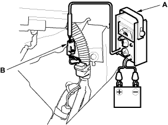

DTC P0011: VTC System Malfunction
- Reset the ECM (see page 11-4).
- Start the engine. Hold the engine at 3,000 rpm (min-1) with no load (in Park or neutral) until the radiator fan comes on.
- Test-drive at a steady speed between 30 - 60 km/h (19 - 37 mph) for 10 minutes.
- Check for Temporary DTC with the scan tool.
Is Temporary DTC P0011 indicated?
YES - Go to step 5.
NO - Intermittent failure, system is OK at this time. Check for poor connections or loose wires at the VTC oil control solenoid valve and at the ECM. 
- Watch the low oil pressure light.
Is the low oil pressure light on?
YES - Check the oil pressure (see page 8-4).
NO - Go to step 6.
- Turn the ignition switch OFF.
- Remove the auto-tensioner (see page 4-26).
- Remove the VTC strainer, check the VTC filter for clogging.
Is it OK?
YES - Go to step 9.
NO - Replace the engine oil filter and the engine oil.

- Check the VTC oil control solenoid valve (see page 11-107).
Is the VTC oil control solenoid valve OK?
YES - Go to step 10.
NO - Clean the ports of the VTC oil control solenoid valve, or replace the VTC oil control solenoid valve.
- Install the VTC oil control solenoid valve.
- Connect a tachometer (A) to the test tachometer connector (B).

- Start the engine. Hold the engine at 700 - 1,000 rpm (min-1).
- Connect the ECM connector terminal B23 and body ground with a jumper wire.
ECM CONNECTOR B (24P)

Wire side of female terminals